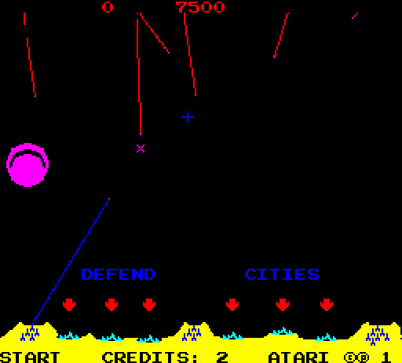
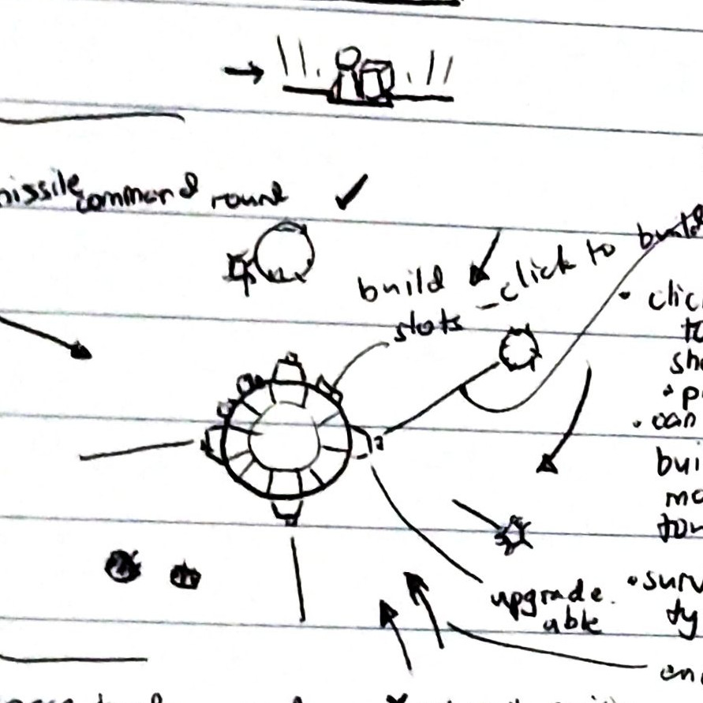

Planet Defense
Click to launch a missile from the nearest available battery. Missiles detonate on the clicked point.
Made in 48 hours as my entry for the 38th Ludum Dare game jam.
Project detailsPlay online- released
- 2017
- role
- creator
- platform
- Web
- tech
- PixiJS
Ludum Dare is a Game Jam (a hackathon for games) held every four months. A theme is announced and participants create a game from scratch in 48 hours.
I used to participate in these LDjams frequently. In LD 38, the theme was A Small World. Immediately after the theme was announced, I went self-brainstorming for game concepts. Fortunately, I settled on an idea before the 12-hour mark.
Missile Command, but circular.
Missile Command
Missile Command was an arcade game from the ’80s. The usual formula of taking a classic and giving it a twist was not very original, but time was limited. Minus points for Innovation, I guess.
Some design sketches showing some planned but unimplemented features
Several hours later, I managed to come up with a working game/prototype.

Hooray! A finished game in exchange for precious hours of sleep!
The game was made with PixiJS, a scene-graph based 2D graphics engine for JavaScript. I’m used to this graphics model since I started programming with Flash.
I initially tried Phaser, but it was too much for my taste. Having found out that Phaser uses Pixi underneath, I went with Pixi. I prefer the simple libraries.
Overall it was an OK game. I think a mobile port would be appropriate, given the simple gameplay and controls.
 Competiton results
Competiton results
This game’s source code is available on GitHub. Not the prettiest code. It’s a hackathon!
You can play it standalone here. Contest entry page here.